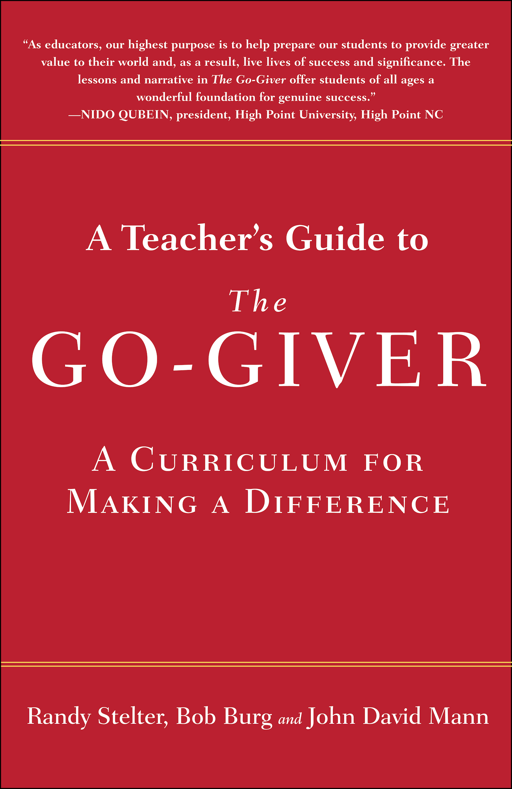
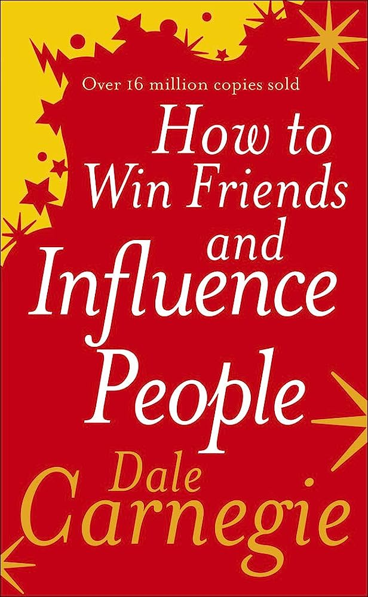

Atomic habits. I discovered this book during a challenging period when my parents were going through a separation, and my ex-girlfriend had walked away from me. Undoubtedly, it is the most remarkable book on transforming one's life. It serves as a constant reminder that consistency is the key to mastering any skill or endeavor.
The Go Giver. It serves as a powerful reminder to treat others with kindness, love, and compassion. The core message emphasizes selflessness over self-centeredness and the importance of prioritizing others. The narrative beautifully depicts the rewards that await those who make sacrifices for the collective's betterment.
A Mind for Numbers. This book reignited my passion for math and science, which had dimmed over time. It offers a truly inspiring story that highlights the ability for anyone to excel in mathematics. Reading through its pages, I discovered newfound motivation and a renewed belief in my own abilities to master this subject. The book serves as a powerful testament to the transformative power of learning and the incredible potential that exists within each of us.
How To Win and Influence Friends. This book holds a treasure trove of knowledge that should be common sense, yet is often overlooked. I highly recommend reading this book as it is filled with valuable lessons. It has been said that living by the principles within this book guarantees success.
Subtle art of not giving a f*ck. While some may argue that this book is overrated, it holds valuable insights that are often underestimated. One particularly profound piece of advice is the "backwards law": Embracing negative experiences can lead to positive outcomes. So, rather than avoiding difficulties, it's advised to welcome them, as they can catalyze personal growth and transformation. The book emphasizes the notion that anything worthwhile is never easy. I recommend reading the first half to delve into these compelling ideas.